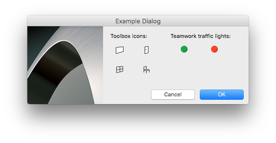

Graphisoft Resource Compiler Example on Macintosh
In this example, we will create a native binary Macintosh resource for an Example dialog, which contains few icons, a picture, text items and two buttons:

The resource files corresponding to this dialog are:
- ExampleGRC.grc: this GRC file contains the localizable resources ('GDLG' and 'DLGH')
- ExampleFixGRC.grc: this GRC file contains the non-localizable resources ('GICN')
The results will be native binary Archicad resource files (GSDG_10000.rsrd and DLGH_10000.rsrd), a platform-native .strings file (ExampleGRC.grc.strings), and TIFF image files for the icons.
Note that the Resource Compiler can handle only one input file (.grc) per one run.
We compile the resources in two steps. Later, every step is thoroughly explained:
- Step: Compile non-localizable GRC file with ResConv tool
ResConv -m r -t M -q utf8 utf16 -p .\RFIX\Images -w 2 -i .\RFIX\ExampleFixGRC.grc -o .\RO\ExampleFixGRC.rc2
- Step: Compile localizable GRC file with ResConv tool
ResConv -m r -t M -q utf8 utf16 -i .\RINT\ExampleGRC.grc -o .\RO\ExampleGRC.grc.ro
Every command should be typed as a single line into the command line.
- Step
- Input: ExampleFixGRC.grc, images (10000.png, WallTool_18x18.svg, DoorTool_18x18.svg, WindowTool_18x18.svg, ObjectTool_18x18.svg, TWEditable_16x16.svg, TWLocked_16x16.svg)
- Output: TIFF image files (10000.tif, WallTool.tif, DoorTool.tif, WindowTool.tif, ObjectTool.tif, TWEditable.tif, TWLocked.tif)
In this step the image conversions takes place. From the information in the GRC file and the image sources, ResConv creates .tif (TIFF) files.
 The possible source image formats of an icon resource are PNG and SVG. For further information, read how to compile icon resources.
The possible source image formats of an icon resource are PNG and SVG. For further information, read how to compile icon resources.The first parameter (-m r) specifies the converter operation mode of the ResConv (-m r is the default, so you may omit that). The second option is important, we instruct the compiler to convert to Macintosh platform, so it knows that it should generate Macitosh specific binary resources. We could add the output codepage (should be set to utf16). The -p parameter defines the path to the source images. And finally the last two parameters specify the input and the output files.
Because of the -w 2 parameter, the output TIFF image files will contain two representations of the icon (with 100% and 200% of the default resolution).
- Step
- Input: ExampleGRC.grc
- Output: GSDG_10000.rsrd, DLGH_10000.rsrd, ExampleGRC.grc.strings
In this step the native binary Archicad resource files are translated from the localizable GRC file.
 Also, the 'STR#' resources are converted into platform-native .strings files. The individual .strings files have to be merged into one Localizable.strings file inside the resulting bundle's Resources/[lang].lproj folder.
Also, the 'STR#' resources are converted into platform-native .strings files. The individual .strings files have to be merged into one Localizable.strings file inside the resulting bundle's Resources/[lang].lproj folder.Parameters are the same as described in the first step, but here no need to define the path of the images.
{kind=link}
{kind=link}
{kind=link}
{kind=link}
{kind=link}
{kind=link}
{kind=link}
Note: if you want to use preprocessor definitions (#define-s) or formulate conditional preprocessor expressions in the GRC file, it's recommended to run the C pre-processor command for each GRC before resource compilation:
xcrun clang -x c++ -E -P -DPREPROCESS_GRC -DGS_64BIT -Dmacintosh -DINT__APP -I <include_headers_dir> .\RINT\ExampleGRC.grc > .\RO\ExampleGRC.grc.ro.i ResConv -m r -t M -q utf8 utf16 -i .\RO\ExampleGRC.grc.ro.i -o .\RO\ExampleGRC.grc.ro
If you build your Add-On project with Xcode, you can use the compileGRCs.pl script, which is attached to each example Add-On. This script automatically finds and compiles GRC files, and uses the C prerocessor as well.
We are ready!